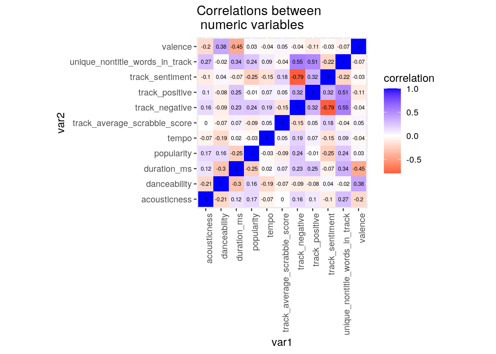

April 6, 2021
Eli Le
0. Introduction
I’ve been a big fan of Taylor Swift’s music since I was in elementary school. Over the years she’s released nine albums across a variety of genres, ranging from country to synth-pop to alternative rock. To get some more insight into the lyrics and audio features associated with Taylor Swift’s discography, I made a Spotify playlist using songs from Taylor Swift’s nine studio albums and used spotifyr to extract data associated with each song. Spotify assigns each song some attributes such as danceability (based on “tempo, rhythm stability, beat strength, and overall regularity”), acousticness (a confidence measure of whether or not a song is acoustic), and valence (which describes the “musical positiveness conveyed by a track”), all of which are numbers between 0.0 and 1.0. Also available are data on popularity (a value from 1 to 100 calculated based on “how many plays a track received and how recent those plays are”) and tempo.
# Prepare to pull data from Spotify and Genius
devtools::install_github("charlie86/spotifyr")
library(spotifyr)
library(tidyverse)
Sys.setenv(SPOTIFY_CLIENT_ID = "fcb39961637948d39c8d41385c5da8eb")
Sys.setenv(SPOTIFY_CLIENT_SECRET = "346e87fd3d494efc9101771ecd540031")
# Pull data from Spotify playlist
ts_spotify <- get_playlist_audio_features("8fb3j9ab1se1iev472sqofnlo",
"3XYAyjXTiRNOQ3AlJ8acFp")
ts_spotify <- ts_spotify %>% arrange(track.name)
# Select variables of interest
ts_spotify <- ts_spotify %>% select(track_title = track.name,
track_number = track.track_number, album_name = track.album.name,
album_release_date = track.album.release_date, duration_ms = track.duration_ms,
explicit = track.explicit, popularity = track.popularity,
danceability, acousticness, valence, tempo)
glimpse(ts_spotify)## Rows: 151
## Columns: 11
## $ track_title <chr> "...Ready For It?", "‘tis the damn season", "22", "…
## $ track_number <int> 1, 4, 6, 14, 4, 15, 5, 5, 8, 3, 8, 16, 10, 14, 2, 1…
## $ album_name <chr> "reputation", "evermore (deluxe version)", "Red (De…
## $ album_release_date <chr> "2017-11-10", "2021-01-07", "2012-10-22", "2006-10-…
## $ duration_ms <int> 208186, 229840, 230133, 220146, 199200, 223293, 327…
## $ explicit <lgl> FALSE, FALSE, FALSE, FALSE, FALSE, FALSE, FALSE, FA…
## $ popularity <int> 73, 64, 61, 48, 52, 69, 68, 56, 64, 57, 55, 54, 64,…
## $ danceability <dbl> 0.613, 0.575, 0.658, 0.483, 0.576, 0.756, 0.602, 0.…
## $ acousticness <dbl> 0.05270, 0.73500, 0.00215, 0.00349, 0.05100, 0.1300…
## $ valence <dbl> 0.417, 0.348, 0.668, 0.268, 0.428, 0.399, 0.337, 0.…
## $ tempo <dbl> 160.015, 145.916, 104.007, 156.092, 115.028, 111.01…After completing the above steps, I had my first dataset: ts_spotify. I wanted to dive into lyric data for my second set, specifically looking at things like sentiment and scrabble_score for each word. To start, I pulled lyric data from Genius with a package called genius. (There really is an R package for everything!)
# Prepare to pull data from Genius install.packages('genius')
library(genius)
# Specify albums of interest
ts_albums <- tribble(~artist, ~title, "Taylor Swift", "Taylor Swift",
"Taylor Swift", "Fearless (Platinum Edition)", "Taylor Swift",
"Speak Now (Deluxe)", "Taylor Swift", "RED (Deluxe Edition)",
"Taylor Swift", "1989 (Deluxe)", "Taylor Swift", "reputation",
"Taylor Swift", "Lover", "Taylor Swift", "folklore (deluxe version)",
"Taylor Swift", "evermore (deluxe version)")
ts_genius <- ts_albums %>% add_genius(artist, title, type = "album")
# Remove Genius lyrics for alternate versions, demo
# recordings, and voice memos
remove_versions <- c("Teardrops on My Guitar (Pop Version)",
"Forever & Always (Piano Version)", "Treacherous (Original Demo Recording)",
"Red (Original Demo Recording)", "State of Grace (Acoustic Version)",
"I Know Places (Voice Memo)", "I Wish You Would (Voice Memo)",
"Blank Space (Voice Memo)")
ts_genius <- filter(ts_genius, !track_title %in% remove_versions)
# Prepare to separate lines into individual words for further
# analysis
library(tidytext)
data(stop_words)
ts_genius <- ts_genius %>% group_by(track_title) %>% mutate(line_number = row_number()) %>%
ungroup()
# Fix a specific lyric to separate two words not later
# removed as part of (ts_)stop_words
ts_genius$lyric[ts_genius$lyric == "Dancin' in your Levi'sDrunk under a streetlight, I"] <- "Dancin' in your Levi's Drunk under a streetlight, I"
# Separate lines into individual words
words <- ts_genius %>% unnest_tokens(word, lyric)This next part is kind of inelegant, sorry–I’m trying to fix some of the quirks in the Genius lyric data, which is all user-sourced and tends to reflect Taylor Swift’s habit of dropping the final “g” in a lot of her gerunds. The code is also pretty long and not very interesting, so I’ve opted to hide it by default (if you want to see it, click the Code button below).
# Fix non-standardized spellings (and remove stop words where
# applicable)
words$word[words$word == "time'cause"] <- "time"
words$word[words$word == "bedpost'cause"] <- "bedpost"
words$word[words$word == "crowd32"] <- "crowd"
words$word[words$word == "can'tso"] <- "can't"
words$word[words$word == "you'cause"] <- "you" # I realize 'you' and ''cause' are both stop words, so I could have picked either one here
words$word[words$word == "ileft"] <- "left"
words$word[words$word == "insane'cause"] <- "insane"
words$word[words$word == "ican't"] <- "can't"
words$word[words$word == "easy'cause"] <- "easy"
words$word[words$word == "nothin'and"] <- "nothing"
words$word[words$word == "drinkin'while"] <- "drinking"
words$word[words$word == "room'cause"] <- "room"
words$word[words$word == "curfew20"] <- "curfew"
words$word[words$word == "grace'cause"] <- "grace"
words$word[words$word == "wine'cause"] <- "wine"
words$word[words$word == "won'tand"] <- "won't"
words$word[words$word == "glistenyou're"] <- "glisten"
# Add a final 'g' to all of these gerunds
words$word[words$word == "lookin"] <- "looking"
words$word[words$word == "standin"] <- "standing"
words$word[words$word == "lovin"] <- "loving"
words$word[words$word == "dancin"] <- "dancing"
words$word[words$word == "lettin"] <- "letting"
words$word[words$word == "ridin"] <- "riding"
words$word[words$word == "livin"] <- "living"
words$word[words$word == "sneakin"] <- "sneaking"
words$word[words$word == "comin"] <- "coming"
words$word[words$word == "drivin"] <- "driving"
words$word[words$word == "dyin"] <- "dying"
words$word[words$word == "thankin"] <- "thanking"
words$word[words$word == "hopin"] <- "hoping"
words$word[words$word == "feelin"] <- "feeling"
words$word[words$word == "nothin"] <- "nothing"
words$word[words$word == "laughin"] <- "laughing"
words$word[words$word == "flyin"] <- "flying"
words$word[words$word == "waitin"] <- "waiting"
words$word[words$word == "thinkin"] <- "thinking"
words$word[words$word == "beggin"] <- "begging"
words$word[words$word == "wonderin"] <- "wondering"
words$word[words$word == "pickin"] <- "picking"
words$word[words$word == "guessin"] <- "guessing"
words$word[words$word == "cruisin"] <- "cruising"
words$word[words$word == "movin"] <- "moving"
words$word[words$word == "groovin"] <- "grooving"
words$word[words$word == "whippin"] <- "whipping"
words$word[words$word == "breakin"] <- "breaking"
words$word[words$word == "toyin"] <- "toying"
words$word[words$word == "shakin"] <- "shaking"
words$word[words$word == "pacin"] <- "pacing"
words$word[words$word == "touchin"] <- "touching"
words$word[words$word == "skippin"] <- "skipping"
words$word[words$word == "runnin"] <- "running"
words$word[words$word == "screamin"] <- "screaming"
words$word[words$word == "bein"] <- "being"
words$word[words$word == "callin"] <- "calling"
words$word[words$word == "tryin"] <- "trying"
words$word[words$word == "makin"] <- "making"
words$word[words$word == "stressin"] <- "stressing"
words$word[words$word == "obsessin"] <- "obsessing"
words$word[words$word == "holdin"] <- "holding"
words$word[words$word == "seein"] <- "seeing"
words$word[words$word == "starin"] <- "staring"
words$word[words$word == "changin"] <- "changing"
words$word[words$word == "bleedin"] <- "bleeding"
words$word[words$word == "chasin"] <- "chasing"
words$word[words$word == "stayin"] <- "staying"
words$word[words$word == "fakin"] <- "faking"
words$word[words$word == "dividin"] <- "dividing"
words$word[words$word == "keepin"] <- "keeping"With those words taken care of, I moved on to calculating sentiment and scrabble_score for each word using some handy features in tidytext and ScrabbleScore.
# Remove stop words (extremely common words such as “the”, “of”, and “I”)
tidy_words <- words %>%
anti_join(stop_words)
# Filter out some more stop words specific to Taylor Swift's lyrics
ts_stop_words <- c("ooh", "yeah", "ah", "gonna", "di", "ey", "hey", "whoa", "ha", "la", "da", "uh", "til", "would've", "em", "could've", "22", "aah", "bout", "eeh", "usin", "doin", "ya", "tryna", "2", "ra", "haa", "ho", "huh", "1", "2am", "shoulda", "why'd", "iwish", "20", "mm", "na", "16th", "ahh", "hmm", "one's", "sayin", "till", "tis", "4", "a.m", "ayy", "gettin", "should've", "wanna", "mmmm", "her'd", "i'ma", "outta", "mmm", "whatcha", "say", "woah", "30", "amas", "kinda", "that'll", "how'd", "pj's", "58", "9th", "yay", "18", "45", "17", "'cause", "ta", "gon", "eh", "git", "g5", "4th", "whoah", "haha", "ii", "3", "must've", "3i", "3you", "90s", "l.a", "who'll", "who'd", "there'll", "how'd", "oh", "oh'cause", "st")
tidy_words <- filter(tidy_words, !word %in% ts_stop_words)
# Remove rows containing NA
tidy_words <- na.omit(tidy_words)
# Find and count unique, non-title words in each track
unique_nontitle_words <- tidy_words %>%
group_by(track_title) %>%
count(word) %>%
filter(n == 1) %>%
mutate(unique_nontitle_words_in_track = n()) %>%
select(-n)
# For each word, assign sentiment based on the `bing` lexicon (positive or negative)
# install.packages("textdata")
song_sentiment <- unique_nontitle_words %>%
group_by(track_title) %>%
mutate(word_count = 1:n(), index = word_count %/% 500 + 1) %>%
inner_join(get_sentiments("bing")) %>%
count(track_title, index = index , sentiment) %>%
ungroup() %>%
spread(sentiment, n, fill = 0) %>%
mutate(sentiment = positive - negative) %>%
select(-index)
# Calculate Scrabble scores for each word, then an average for the track
# install.packages("ScrabbleScore")
scrabble <- unique_nontitle_words %>%
group_by(track_title) %>%
mutate(scrabble_score = ScrabbleScore::sws(word)) %>%
na.omit() %>% # removes words that cause NA because of punctuation
mutate(track_average_scrabble_score = mean(scrabble_score))To get my second dataset, sentiment_and_scrabble, I used left_join on the sentiment and scrabble sets I prepared above, then renamed some of the variables so they were more easily understandable.
# Join `song_sentiment` and `scrabble`
sentiment_and_scrabble <- full_join(song_sentiment, scrabble,
by = "track_title") %>% rename(track_negative = negative,
track_positive = positive, track_sentiment = sentiment, word_scrabble_score = scrabble_score)
glimpse(sentiment_and_scrabble)## Rows: 3,258
## Columns: 8
## $ track_title <chr> "...Ready for It?", "...Ready for It?",…
## $ track_negative <dbl> 4, 4, 4, 4, 4, 4, 4, 4, 4, 4, 4, 4, 4, …
## $ track_positive <dbl> 2, 2, 2, 2, 2, 2, 2, 2, 2, 2, 2, 2, 2, …
## $ track_sentiment <dbl> -2, -2, -2, -2, -2, -2, -2, -2, -2, -2,…
## $ word <chr> "act", "boys", "burton", "comparison", …
## $ unique_nontitle_words_in_track <int> 33, 33, 33, 33, 33, 33, 33, 33, 33, 33,…
## $ word_scrabble_score <dbl> 5, 9, 8, 16, 11, 10, 13, 10, 9, 6, 8, 1…
## $ track_average_scrabble_score <dbl> 9.636364, 9.636364, 9.636364, 9.636364,…Between these datasets, I’m curious to see whether there will be an association between a track’s valence (“musical positiveness” as defined in ts_spotify) and track_sentiment. I’m also wondering if duration_ms shows any association with unique_nontitle_words_in_track or track_average_scrabble_score.
1. Tidying
To clean up sentiment_and_scrabble, I made each song its own observation using pivot_wider.
sentiment_and_scrabble_tidy <- sentiment_and_scrabble %>%
subset(select = c(1, 2, 3, 4, 6, 8, 5, 7)) %>% # rearrange columns to make more sense
pivot_wider(names_from = "word", values_from = "word_scrabble_score") %>%
subset(select = c(1:6)) # keep only columns that apply to tracks, not individual wordsPrior to joining the datasets, I had to go in and standardize some track_title entries in sentiment_and_scrabble_tidy to match those in ts_spotify (and vice versa). This wasn’t the most exciting task, but I had to do it because of formatting differences between Spotify and Genius. (Again, apologies for how wildly long and inelegant this is!)
# Edit `track_title`s in `sentiment_and_scrabble`
sentiment_and_scrabble_tidy$track_title[sentiment_and_scrabble_tidy$track_title ==
"...Ready for It?"] <- "...Ready For It?"
sentiment_and_scrabble_tidy$track_title[sentiment_and_scrabble_tidy$track_title ==
"A Place In This World"] <- "A Place in this World"
sentiment_and_scrabble_tidy$track_title[sentiment_and_scrabble_tidy$track_title ==
"All You Had to Do Was Stay"] <- "All You Had To Do Was Stay"
sentiment_and_scrabble_tidy$track_title[sentiment_and_scrabble_tidy$track_title ==
"Back to December"] <- "Back To December"
sentiment_and_scrabble_tidy$track_title[sentiment_and_scrabble_tidy$track_title ==
"Cold as You"] <- "Cold As You"
sentiment_and_scrabble_tidy$track_title[sentiment_and_scrabble_tidy$track_title ==
"Come Back... Be Here"] <- "Come Back...Be Here"
sentiment_and_scrabble_tidy$track_title[sentiment_and_scrabble_tidy$track_title ==
"Dancing with Our Hands Tied"] <- "Dancing With Our Hands Tied"
sentiment_and_scrabble_tidy$track_title[sentiment_and_scrabble_tidy$track_title ==
"Death by a Thousand Cuts"] <- "Death By A Thousand Cuts"
sentiment_and_scrabble_tidy$track_title[sentiment_and_scrabble_tidy$track_title ==
"Everything Has Changed (Ft. Ed Sheeran)"] <- "Everything Has Changed"
sentiment_and_scrabble_tidy$track_title[sentiment_and_scrabble_tidy$track_title ==
"Girl at Home"] <- "Girl At Home"
sentiment_and_scrabble_tidy$track_title[sentiment_and_scrabble_tidy$track_title ==
"How You Get the Girl"] <- "How You Get The Girl"
sentiment_and_scrabble_tidy$track_title[sentiment_and_scrabble_tidy$track_title ==
"I’m Only Me When I’m with You"] <- "I’m Only Me When I’m With You"
sentiment_and_scrabble_tidy$track_title[sentiment_and_scrabble_tidy$track_title ==
"If This Was a Movie"] <- "If This Was A Movie"
sentiment_and_scrabble_tidy$track_title[sentiment_and_scrabble_tidy$track_title ==
"It’s Nice to Have a Friend"] <- "It’s Nice To Have A Friend"
sentiment_and_scrabble_tidy$track_title[sentiment_and_scrabble_tidy$track_title ==
"it’s time to go"] <- "it’s time to go - bonus track"
sentiment_and_scrabble_tidy$track_title[sentiment_and_scrabble_tidy$track_title ==
"King of My Heart"] <- "King Of My Heart"
sentiment_and_scrabble_tidy$track_title[sentiment_and_scrabble_tidy$track_title ==
"Out of the Woods"] <- "Out Of The Woods"
sentiment_and_scrabble_tidy$track_title[sentiment_and_scrabble_tidy$track_title ==
"Picture to Burn"] <- "Picture To Burn"
sentiment_and_scrabble_tidy$track_title[sentiment_and_scrabble_tidy$track_title ==
"right where you left me"] <- "right where you left me - bonus track"
sentiment_and_scrabble_tidy$track_title[sentiment_and_scrabble_tidy$track_title ==
"State of Grace"] <- "State Of Grace"
sentiment_and_scrabble_tidy$track_title[sentiment_and_scrabble_tidy$track_title ==
"Teardrops on My Guitar"] <- "Teardrops On My Guitar - Radio Single Remix"
sentiment_and_scrabble_tidy$track_title[sentiment_and_scrabble_tidy$track_title ==
"the lakes"] <- "the lakes - bonus track"
sentiment_and_scrabble_tidy$track_title[sentiment_and_scrabble_tidy$track_title ==
"The Other Side of the Door"] <- "The Other Side Of The Door"
sentiment_and_scrabble_tidy$track_title[sentiment_and_scrabble_tidy$track_title ==
"The Story of Us"] <- "The Story Of Us"
sentiment_and_scrabble_tidy$track_title[sentiment_and_scrabble_tidy$track_title ==
"This is Why We Can’t Have Nice Things"] <- "This Is Why We Can’t Have Nice Things"
sentiment_and_scrabble_tidy$track_title[sentiment_and_scrabble_tidy$track_title ==
"Welcome to New York"] <- "Welcome To New York"
sentiment_and_scrabble_tidy$track_title[sentiment_and_scrabble_tidy$track_title ==
"You Are in Love"] <- "You Are In Love"
sentiment_and_scrabble_tidy$track_title[sentiment_and_scrabble_tidy$track_title ==
"You Belong with Me"] <- "You Belong With Me"
# Edit `track_title`s in `ts_spotify`
ts_spotify$track_title[ts_spotify$track_title == "‘tis the damn season"] <- "'tis the damn season"
ts_spotify$track_title[ts_spotify$track_title == "Breathe"] <- "Breathe (Ft. Colbie Caillat)"
ts_spotify$track_title[ts_spotify$track_title == "coney island (feat. The National)"] <- "coney island (Ft. The National)"
ts_spotify$track_title[ts_spotify$track_title == "End Game"] <- "End Game (Ft. Ed Sheeran & Future)"
ts_spotify$track_title[ts_spotify$track_title == "evermore (feat. Bon Iver)"] <- "evermore (Ft. Bon Iver)"
ts_spotify$track_title[ts_spotify$track_title == "Everything Has Changed"] <- "Everything Has Changed (Ft. Ed Sheeran)"
ts_spotify$track_title[ts_spotify$track_title == "exile (feat. Bon Iver)"] <- "exile (Ft. Bon Iver)"
ts_spotify$track_title[ts_spotify$track_title == "ME! (feat. Brendon Urie of Panic! At The Disco)"] <- "ME! (Ft. Brendon Urie)"
ts_spotify$track_title[ts_spotify$track_title == "no body, no crime (feat. HAIM)"] <- "no body, no crime (Ft. HAIM)"
ts_spotify$track_title[ts_spotify$track_title == "Soon You’ll Get Better (feat. The Chicks)"] <- "Soon You'll Get Better (Ft. The Chicks)"
ts_spotify$track_title[ts_spotify$track_title == "The Last Time"] <- "The Last Time (Ft. Gary Lightbody)"
2. Joining/Merging
I used full_join to merge ts_spotify with sentiment_and_scrabble_tidy to get swift_spotify_sentiment_scrabble. For my purposes, full_join was more appropriate than left_join or inner_join because it minimized the likelihood that I would lose data due to NAs caused by formatting and other issues between the two datasets (more on that below).
swift_spotify_sentiment_scrabble <- full_join(ts_spotify, sentiment_and_scrabble_tidy,
by = "track_title")I needed to manually fix an error where the data for ~40 songs would not join no matter what I tried (everything on Stack Overflow). Instead of joining to form one track with all the required information, each of these songs would remain its own row with half of the values NA. To get around this, I opened up the data in Microsoft Excel (after exporting), then imported it back into RStudio. I also decided to drop track_number and album_release_date since they were fun to know, but ultimately not relevant to my analysis.
library(readr)
s4 <- read_csv("s4.csv") %>% select(-track_number, -album_release_date) %>%
na.omit %>% arrange(track_title)
glimpse(s4)## Rows: 148
## Columns: 14
## $ track_title <chr> "...Ready For It?", "'tis the damn seas…
## $ album_name <chr> "reputation", "evermore (deluxe version…
## $ duration_ms <dbl> 208186, 229840, 230133, 220146, 199200,…
## $ explicit <lgl> FALSE, FALSE, FALSE, FALSE, FALSE, FALS…
## $ popularity <dbl> 74, 67, 63, 50, 54, 71, 70, 58, 66, 59,…
## $ danceability <dbl> 0.613, 0.575, 0.658, 0.483, 0.576, 0.75…
## $ acousticness <dbl> 0.05270, 0.73500, 0.00215, 0.00349, 0.0…
## $ valence <dbl> 0.417, 0.348, 0.668, 0.268, 0.428, 0.39…
## $ tempo <dbl> 160.015, 145.916, 104.007, 156.092, 115…
## $ track_negative <dbl> 4, 3, 2, 1, 1, 4, 9, 1, 1, 10, 6, 0, 3,…
## $ track_positive <dbl> 2, 1, 4, 0, 2, 2, 6, 0, 1, 4, 4, 1, 2, …
## $ track_sentiment <dbl> -2, -2, 2, -1, 1, -2, -3, -1, 0, -6, -2…
## $ unique_nontitle_words_in_track <dbl> 33, 37, 18, 13, 20, 36, 81, 11, 16, 47,…
## $ track_average_scrabble_score <dbl> 9.636364, 9.714286, 10.555556, 9.384615…I wasn’t able to get complete sentiment_and_scrabble data for three of the tracks included in this dataset (Come In With The Rain, gold rush, and Untouchable)–in each of these cases, I only got data for scrabble, not sentiment. Since these NA values would interfere with some of the summary statistics calculated in the next step, I decided to remove these tracks from the dataset. This final dataset, s4, contains 148 tracks from Taylor Swift’s discography and 13 metrics for each track.
3. Wrangling
To start exploring my dataset, I used filter and arrange to print the top 10 most popular songs, as defined by data from Spotify. I then used mutate to create a new variable (above_average_popularity) as a function of whether or not a track’s popularity was greater than average. Following this, I calculated some more general summary statistics, using group_by to group tracks by album_name. Within summarize, I found mean, sd, var, min, and max for each of my numeric variables. I took a subset of s4_summary_by_album to show what format it’s in without printing a huge table, using select to grab album_name and all of the summary statistics that describe scrabble_score. Finally, I show a correlation matrix for the numeric variables in s4.
# install.packages('kableExtra')
library(knitr)
library(kableExtra)
# Display data for the 10 songs with the highest `popularity`
top_10 <- s4 %>%
filter(popularity > 50) %>%
arrange(desc(popularity)) %>%
head(10)
top_10## # A tibble: 10 x 14
## track_title album_name duration_ms explicit popularity danceability
## <chr> <chr> <dbl> <lgl> <dbl> <dbl>
## 1 You Need To Calm Down Lover 171360 FALSE 81 0.771
## 2 Lover Lover 221306 FALSE 80 0.359
## 3 ME! (Ft. Brendon Uri… Lover 193000 FALSE 80 0.61
## 4 The Man Lover 190360 FALSE 79 0.777
## 5 Delicate reputation 232253 FALSE 78 0.75
## 6 Cruel Summer Lover 178426 FALSE 77 0.552
## 7 Look What You Made M… reputation 211853 FALSE 77 0.766
## 8 Getaway Car reputation 233626 FALSE 75 0.562
## 9 Paper Rings Lover 222400 FALSE 75 0.811
## 10 ...Ready For It? reputation 208186 FALSE 74 0.613
## # … with 8 more variables: acousticness <dbl>, valence <dbl>, tempo <dbl>,
## # track_negative <dbl>, track_positive <dbl>, track_sentiment <dbl>,
## # unique_nontitle_words_in_track <dbl>, track_average_scrabble_score <dbl># Create new variable `above_average_popularity` in `s4`
mean_popularity <- s4 %>%
summarize(mean(popularity))
s4 <- s4 %>%
mutate(above_average_popularity = (popularity > mean_popularity$`mean(popularity)`))
# Calculate summary statistics for the data in `s4`, grouped by the categorical variable `album_name`
s4_summary_by_album <- s4 %>%
group_by(album_name) %>%
summarize(mean(duration_ms), # duration_ms
sd(duration_ms),
var(duration_ms),
min(duration_ms),
max(duration_ms),
mean(popularity), # popularity
sd(popularity),
var(popularity),
min(popularity),
max(popularity),
mean(danceability), # danceability
sd(danceability),
var(danceability),
min(danceability),
max(danceability),
mean(acousticness), # acousticness
sd(acousticness),
var(acousticness),
min(acousticness),
max(acousticness),
mean(valence), # valence
sd(valence),
var(valence),
min(valence),
max(valence),
mean(tempo), # tempo
sd(tempo),
var(tempo),
min(tempo),
max(tempo),
mean(track_negative), # track_negative
sd(track_negative),
var(track_negative),
min(track_negative),
max(track_negative),
mean(track_positive), # track_positive
sd(track_positive),
var(track_positive),
min(track_positive),
max(track_positive),
mean(track_sentiment), # track_sentiment
sd(track_sentiment),
var(track_sentiment),
min(track_sentiment),
max(track_sentiment),
mean(unique_nontitle_words_in_track), # unique_nontitle_words_in_track
sd(unique_nontitle_words_in_track),
var(unique_nontitle_words_in_track),
min(unique_nontitle_words_in_track),
max(unique_nontitle_words_in_track),
mean(track_average_scrabble_score),# track_average_scrabble_score
sd(track_average_scrabble_score),
var(track_average_scrabble_score),
min(track_average_scrabble_score),
max(track_average_scrabble_score))
# Show `scrabble_score`-related subset of `s4_summary_by_album`
s4_scrabble_summary <- s4_summary_by_album %>%
select("album_name", contains("scrabble_score")) %>%
kable() %>%
kable_styling(font_size = 8)
s4_scrabble_summary| album_name | mean(track_average_scrabble_score) | sd(track_average_scrabble_score) | var(track_average_scrabble_score) | min(track_average_scrabble_score) | max(track_average_scrabble_score) |
|---|---|---|---|---|---|
| 1989 (Deluxe Edition) | 9.411413 | 0.7793509 | 0.6073878 | 8.100000 | 10.84000 |
| evermore (deluxe version) | 9.502473 | 0.4916377 | 0.2417076 | 8.791667 | 10.33333 |
| Fearless Platinum Edition | 9.560160 | 0.7156827 | 0.5122018 | 8.666667 | 11.50000 |
| folklore (deluxe version) | 9.634499 | 0.6848660 | 0.4690414 | 8.802817 | 10.96552 |
| Lover | 9.506511 | 0.6380938 | 0.4071637 | 7.968750 | 10.29730 |
| Red (Deluxe Edition) | 9.761090 | 0.8353072 | 0.6977382 | 8.212121 | 11.36842 |
| reputation | 9.473525 | 0.6916400 | 0.4783659 | 8.695652 | 11.52000 |
| Speak Now (Deluxe Edition) | 9.843808 | 0.6215473 | 0.3863210 | 9.058824 | 11.62162 |
| Taylor Swift | 9.640711 | 0.8064913 | 0.6504281 | 8.000000 | 11.29412 |
# Make correlation matrix
s4_correlations <- s4 %>%
select_if(is.numeric) %>%
cor(use = "pair") %>%
kable() %>%
kable_styling(font_size = 8)
s4_correlations| duration_ms | popularity | danceability | acousticness | valence | tempo | track_negative | track_positive | track_sentiment | unique_nontitle_words_in_track | track_average_scrabble_score | |
|---|---|---|---|---|---|---|---|---|---|---|---|
| duration_ms | 1.0000000 | -0.2528402 | -0.3049262 | 0.1209942 | -0.4458944 | 0.0206481 | 0.2296380 | 0.2496029 | -0.0682106 | 0.3385649 | 0.0657059 |
| popularity | -0.2528402 | 1.0000000 | 0.1612096 | 0.1699437 | 0.0337217 | -0.0308053 | 0.2395671 | -0.0083334 | -0.2450132 | 0.2436290 | -0.0927759 |
| danceability | -0.3049262 | 0.1612096 | 1.0000000 | -0.2055570 | 0.3833061 | -0.1902627 | -0.0893997 | -0.0825593 | 0.0360087 | -0.0244873 | -0.0734604 |
| acousticness | 0.1209942 | 0.1699437 | -0.2055570 | 1.0000000 | -0.1955259 | -0.0652582 | 0.1631755 | 0.0987506 | -0.0993264 | 0.2734671 | -0.0032271 |
| valence | -0.4458944 | 0.0337217 | 0.3833061 | -0.1955259 | 1.0000000 | -0.0390315 | -0.0398966 | -0.1099727 | -0.0312408 | -0.0658305 | 0.0478014 |
| tempo | 0.0206481 | -0.0308053 | -0.1902627 | -0.0652582 | -0.0390315 | 1.0000000 | 0.1891845 | 0.0672068 | -0.1457485 | 0.0899458 | 0.0498034 |
| track_negative | 0.2296380 | 0.2395671 | -0.0893997 | 0.1631755 | -0.0398966 | 0.1891845 | 1.0000000 | 0.3237533 | -0.7907775 | 0.5537982 | -0.1473000 |
| track_positive | 0.2496029 | -0.0083334 | -0.0825593 | 0.0987506 | -0.1099727 | 0.0672068 | 0.3237533 | 1.0000000 | 0.3231199 | 0.5136772 | 0.0529853 |
| track_sentiment | -0.0682106 | -0.2450132 | 0.0360087 | -0.0993264 | -0.0312408 | -0.1457485 | -0.7907775 | 0.3231199 | 1.0000000 | -0.2216029 | 0.1816124 |
| unique_nontitle_words_in_track | 0.3385649 | 0.2436290 | -0.0244873 | 0.2734671 | -0.0658305 | 0.0899458 | 0.5537982 | 0.5136772 | -0.2216029 | 1.0000000 | -0.0445181 |
| track_average_scrabble_score | 0.0657059 | -0.0927759 | -0.0734604 | -0.0032271 | 0.0478014 | 0.0498034 | -0.1473000 | 0.0529853 | 0.1816124 | -0.0445181 | 1.0000000 |
I noticed that many of the more popular tracks came from the albums “Lover” (2019) and “reputation,” (2017) which was interesting to me because they represent a significant departure from her previous and current work in terms of genre, overall sound, etc. I also found it interesting that “Lover” (the song) has lower danceability and higher acousticness metrics than the rest of the top 10 most popular tracks, but it’s still the second most popular song. Of the two potential associations I mentioned in my introduction, I see more of a potential association between duration_ms and unique_nontitle_words_in_track than between valence and track_sentiment. However, duration_ms and valence may show some association that I had not previously considered.
4. Visualizing
I used the correlations between numeric variables to generate a heatmap. From this, I saw a strong negative correlation between track_sentiment and track_negative; this was not very surprising to me, since I calculated track_sentiment by subtracting track_negative from track_positive. Similarly, unique_nontitle_words_in_track appears to correlate positively with track_positive and track_negative, both of which were calculated using a list of unique words in a song. I also noticed a potential negative correlation between valence and duration_ms, suggesting that longer songs may tend to sound less upbeat.
library(ggridges)
tidycor <- s4 %>% select_if(is.numeric) %>% cor(use = "pair") %>%
as.data.frame %>% rownames_to_column("var1") %>% pivot_longer(-1,
names_to = "var2", values_to = "correlation")
tidycor %>% ggplot(aes(var1, var2, fill = correlation)) + geom_tile() +
scale_fill_gradient2(low = "red", mid = "white", high = "blue") +
geom_text(aes(label = round(correlation, 2)), color = "black",
size = 2) + theme(axis.text.x = element_text(angle = 90,
hjust = 1)) + coord_fixed() + labs(title = "Correlations between \n numeric variables")
I wanted to see how the audio metrics danceability, acousticness, and valence changed over the course of Taylor Swift’s musical career, from her self-titled album in 2006 through her newest albums (“folklore” and “evermore,” 2020). I was a bit surprised to see that “folklore” and “evermore” score notably higher on the acousticness metric than the rest of Swift’s albums, even her self-titled album…which was very, very country. By contrast, “Lover” and “reputation”, her most mainstream-pop albums, appear to have the lowest acousticness. Within these two groups of albums (her 2020 releases and her mainstream-pop albums), Swift’s tracks appear to share a lot of similarity in audio characteristics (though “Lover” is apparently more danceable than “reputation”). Notable as well are the similarities between her first three albums, which were either country or very country-skewed “country-pop”.
s4$album_name <- factor(s4$album_name, levels = c("Taylor Swift",
"Fearless Platinum Edition", "Speak Now (Deluxe Edition)",
"Red (Deluxe Edition)", "1989 (Deluxe Edition)", "reputation",
"Lover", "folklore (deluxe version)", "evermore (deluxe version)"))
s4 %>% ggplot(aes(y = album_name)) + geom_density_ridges(aes(x = danceability,
color = "Danceability"), alpha = 0.3, scale = 0.9) + geom_density_ridges(aes(x = acousticness,
color = "Acousticness"), alpha = 0.3, scale = 0.9) + geom_density_ridges(aes(x = valence,
color = "Valence"), alpha = 0.3, scale = 0.9) + labs(title = "Audio Characteristics of Each Taylor Swift Album",
x = "Audio Metric", y = "Album") + scale_color_manual(name = "",
values = c(Acousticness = "blue", Danceability = "black",
Valence = "red"))
I saw in the correlation heatmap above that there’s some correlation between valence and duration_ms, so I decided to visualize that along with two other audio metrics. Adding geom_smooth layers helped me see how much variation there was, especially in acousticness vs. duration_ms. A track’s valence seems to have the greatest negative correlation with its duration_ms, while danceability has a slight negative correlation and acousticness has a weak positive correlation that becomes less clear as duration_ms increases past where most of the tracks are.
s4 %>% ggplot(aes(x = duration_ms)) +
geom_point(aes(y = acousticness, color = "Acousticness"),
stat = "summary", #stat = "summary" defaults to mean
shape = 1, alpha = 0.9, size = 1) +
geom_point(aes(y = danceability, color = "Danceability"),
shape = 2, alpha = 0.9, size = 1) +
geom_point(aes(y = valence, color = "Valence"),
shape = 5, alpha = 0.9, size = 1) +
geom_smooth(aes(y = acousticness, color = "Acousticness"), method = "lm") +
geom_smooth(aes(y = danceability, color = "Danceability"), method = "lm") +
geom_smooth(aes(y = valence, color = "Valence"), method = "lm") +
labs(title = "Track Duration vs. Audio Characteristics", x = "Track Duration (ms)", y = "Audio Metric") +
scale_color_manual(name = "", values = c("Acousticness" = "blue", "Danceability" = "black", "Valence" = "red")) +
scale_x_continuous(breaks = scales::pretty_breaks(n = 10)) +
scale_y_continuous(breaks = scales::pretty_breaks(n = 10)) +
theme(axis.text.x = element_text(angle = 90, hjust = 1))
5. Dimensionality Reduction
To prepare s4 for PCA, I selected and scaled the numeric variables before running princomp and performing the appropriate subsequent actions. I picked the first six components because they accounted for > 80% of the total variation. (Most of these PCs also followed Kaiser’s rule, i.e., were > 1.)
# Prepare the data
s4_nums <- s4 %>% select_if(is.numeric) %>% scale
rownames(s4_nums) <- s4$track_title
# Perform PCA by running `princomp`, etc.
s4_pca <- princomp(s4_nums)
names(s4_pca)## [1] "sdev" "loadings" "center" "scale" "n.obs" "scores" "call"eigval <- s4_pca$sdev^2
varprop = round(eigval/sum(eigval), 2)
summary(s4_pca, loadings = T)## Importance of components:
## Comp.1 Comp.2 Comp.3 Comp.4 Comp.5
## Standard deviation 1.610626 1.3843328 1.1730821 1.0793969 0.99861179
## Proportion of Variance 0.237433 0.1754013 0.1259530 0.1066385 0.09127358
## Cumulative Proportion 0.237433 0.4128343 0.5387873 0.6454258 0.73669934
## Comp.6 Comp.7 Comp.8 Comp.9 Comp.10
## Standard deviation 0.93859473 0.84145959 0.75640542 0.65195514 0.53900710
## Proportion of Variance 0.08063209 0.06480645 0.05236739 0.03890336 0.02659137
## Cumulative Proportion 0.81733143 0.88213788 0.93450527 0.97340863 1.00000000
## Comp.11
## Standard deviation 0
## Proportion of Variance 0
## Cumulative Proportion 1
##
## Loadings:
## Comp.1 Comp.2 Comp.3 Comp.4 Comp.5 Comp.6 Comp.7
## duration_ms 0.324 0.403 0.304 0.328 0.165
## popularity 0.152 -0.396 -0.174 -0.333 -0.356 -0.239 0.548
## danceability -0.202 -0.379 -0.384 0.252 0.166 0.201
## acousticness 0.258 -0.544 -0.414 -0.541
## valence -0.216 -0.397 -0.269 0.315 0.200 -0.519
## tempo 0.148 0.218 0.595 -0.341 -0.514
## track_negative 0.522 -0.272 0.184 0.136
## track_positive 0.281 0.250 -0.588 0.175 -0.215
## track_sentiment -0.340 0.434 -0.428 -0.275
## Comp.8 Comp.9 Comp.10 Comp.11
## duration_ms 0.282 0.422 0.488
## popularity -0.137 0.285 0.308
## danceability 0.667 -0.298
## acousticness 0.357 -0.138 0.145
## valence -0.150 0.444 0.299
## tempo 0.433
## track_negative -0.197 -0.344 0.136 0.643
## track_positive -0.253 -0.341 0.269 -0.416
## track_sentiment 0.124 0.643
## [ reached getOption("max.print") -- omitted 2 rows ]# View eigen values and select PCs 1-6 (> 80% of variance)
eigval[1:11]## Comp.1 Comp.2 Comp.3 Comp.4 Comp.5 Comp.6 Comp.7 Comp.8
## 2.5941158 1.9163773 1.3761217 1.1650977 0.9972255 0.8809601 0.7080542 0.5721492
## Comp.9 Comp.10 Comp.11
## 0.4250455 0.2905287 0.0000000s4_scores <- data.frame(track_title = s4$track_title, PC1 = s4_pca$scores[,
1], PC2 = s4_pca$scores[, 2], PC3 = s4_pca$scores[, 3], PC4 = s4_pca$scores[,
4], PC5 = s4_pca$scores[, 5], PC6 = s4_pca$scores[, 6])I then made a biplot using loadings and scores from PC1 and PC2. From here, I made two more plots that broke down the components of the biplot in a more readable way.
# Make a biplot (loadings and PC scores)
library(factoextra)
fviz_pca_biplot(s4_pca, col.ind = "gray") + labs(x = "PC1", y = "PC2")# Plot PC scores only, colored by album
s4_rejoined <- s4_scores %>% left_join(s4)
ggplot(s4_rejoined, aes(PC1, PC2, color = album_name)) + geom_point() +
labs(title = "Track Scores Along PC1 and PC2")# Plot loadings
s4_pca$loadings[1:4, 1:2] %>% as.data.frame %>% rownames_to_column %>%
ggplot() + geom_hline(aes(yintercept = 0), lty = 2) + geom_vline(aes(xintercept = 0),
lty = 2) + ylab("PC2") + xlab("PC1") + geom_segment(aes(x = 0,
y = 0, xend = Comp.1, yend = Comp.2), arrow = arrow(), col = "red") +
geom_label(aes(x = Comp.1 * 0.9, y = Comp.2 + 0.1, label = rowname)) +
labs(title = "Loadings for PC1 and PC2")We can see from these plots that principal components 1 and 2, which (as calculated earlier) account for just over 40% of total variance, do not appear to separate songs by album. This lack of separation reflects the variety of genres and moods included in this dataset, which spans almost 150 songs over Taylor Swift’s nine studio albums (released from 2006 to 2020). From the loadings we can see that PC1 and PC2 were largely impacted by the variables duration_ms, danceability, acousticness, and popularity. Acute angles between loadings indicate positive correlations, while obtuse angles indicate negative correlations.
Prior to running these analyses, I was not expecting to find any strong clusters or axes–as I mentioned in the last paragraph, Taylor Swift’s songs vary greatly both in audio characteristics and in lyrics. I was mostly curious about the different factors that might make some songs more similar to others, which I’ve just begun to explore using the methods above.
Note: Some of the methods carried out as part of this project build off of things done in “tayloR,” a super cool analysis posted online by Simran Vatsa in 2018. I found out about this last week from the Github page for the spotifyr package, where I went after independently wondering, “hey, I really like Taylor Swift, and she has a ton of songs across several albums and genres…is there some way I can use her music in my SDS 348 project?” I do not own any of the audio or lyric data used in this analysis.
## R version 3.6.1 (2019-07-05)
## Platform: x86_64-pc-linux-gnu (64-bit)
## Running under: Ubuntu 18.04.5 LTS
##
## Matrix products: default
## BLAS: /stor/system/opt/R/R-3.6.1/lib/R/lib/libRblas.so
## LAPACK: /stor/system/opt/R/R-3.6.1/lib/R/lib/libRlapack.so
##
## locale:
## [1] LC_CTYPE=en_US.UTF-8 LC_NUMERIC=C
## [3] LC_TIME=en_US.UTF-8 LC_COLLATE=en_US.UTF-8
## [5] LC_MONETARY=en_US.UTF-8 LC_MESSAGES=en_US.UTF-8
## [7] LC_PAPER=en_US.UTF-8 LC_NAME=C
## [9] LC_ADDRESS=C LC_TELEPHONE=C
## [11] LC_MEASUREMENT=en_US.UTF-8 LC_IDENTIFICATION=C
##
## attached base packages:
## [1] stats graphics grDevices utils datasets methods base
##
## other attached packages:
## [1] factoextra_1.0.7 ggridges_0.5.2 kableExtra_1.3.4 knitr_1.30
## [5] tidytext_0.3.0 genius_2.2.2 forcats_0.5.0 stringr_1.4.0
## [9] dplyr_1.0.5 purrr_0.3.4 readr_1.4.0 tidyr_1.1.3
## [13] tibble_3.1.0 ggplot2_3.3.3 tidyverse_1.3.0 spotifyr_2.1.1
##
## loaded via a namespace (and not attached):
## [1] colorspace_2.0-0 ggsignif_0.6.0 selectr_0.4-2 rio_0.5.16
## [5] ellipsis_0.3.1 rprojroot_2.0.2 snakecase_0.11.0 fs_1.5.0
## [9] rstudioapi_0.13 ggpubr_0.4.0 farver_2.0.3 remotes_2.2.0
## [13] SnowballC_0.7.0 ggrepel_0.9.0 fansi_0.4.2 lubridate_1.7.10
## [17] xml2_1.3.2 splines_3.6.1 pkgload_1.1.0 jsonlite_1.7.2
## [21] broom_0.7.3 dbplyr_2.0.0 compiler_3.6.1 httr_1.4.2
## [25] backports_1.2.1 assertthat_0.2.1 Matrix_1.3-2 ScrabbleScore_1.0
## [29] cli_2.3.1 formatR_1.7 htmltools_0.5.0 prettyunits_1.1.1
## [33] tools_3.6.1 gtable_0.3.0 glue_1.4.2 reshape2_1.4.4
## [37] Rcpp_1.0.6 carData_3.0-4 cellranger_1.1.0 vctrs_0.3.6
## [41] debugme_1.1.0 svglite_1.2.3.2 nlme_3.1-151 blogdown_0.20
## [45] xfun_0.20 ps_1.5.0 openxlsx_4.2.3 testthat_3.0.1
## [49] rvest_1.0.0 lifecycle_1.0.0 devtools_2.3.2 rstatix_0.6.0
## [53] scales_1.1.1 hms_1.0.0 yaml_2.2.1 curl_4.3
## [57] memoise_1.1.0 gdtools_0.2.3 stringi_1.5.3 highr_0.8
## [61] tokenizers_0.2.1 desc_1.2.0 zip_2.1.1 pkgbuild_1.2.0
## [65] rlang_0.4.10 pkgconfig_2.0.3 systemfonts_0.3.2 evaluate_0.14
## [69] lattice_0.20-41 labeling_0.4.2 processx_3.4.5 tidyselect_1.1.0
## [73] plyr_1.8.6 magrittr_2.0.1 bookdown_0.21 R6_2.5.0
## [77] generics_0.1.0 DBI_1.1.0 foreign_0.8-71 pillar_1.5.1
## [81] haven_2.3.1 withr_2.3.0 mgcv_1.8-33 abind_1.4-5
## [85] car_3.0-10 janeaustenr_0.1.5 janitor_2.1.0 modelr_0.1.8
## [89] crayon_1.4.1 utf8_1.2.1 rmarkdown_2.6 usethis_2.0.0
## [93] grid_3.6.1 readxl_1.3.1 data.table_1.13.6 callr_3.5.1
## [97] reprex_0.3.0 digest_0.6.27 webshot_0.5.2 munsell_0.5.0
## [ reached getOption("max.print") -- omitted 2 entries ]## [1] "2021-05-09 18:23:25 CDT"## sysname
## "Linux"
## release
## "4.15.0-142-generic"
## version
## "#146-Ubuntu SMP Tue Apr 13 01:11:19 UTC 2021"
## nodename
## "educcomp04.ccbb.utexas.edu"
## machine
## "x86_64"
## login
## "unknown"
## user
## "icl283"
## effective_user
## "icl283"